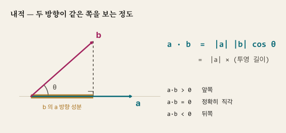
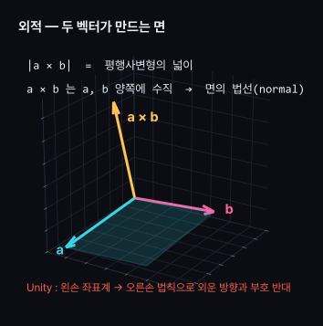
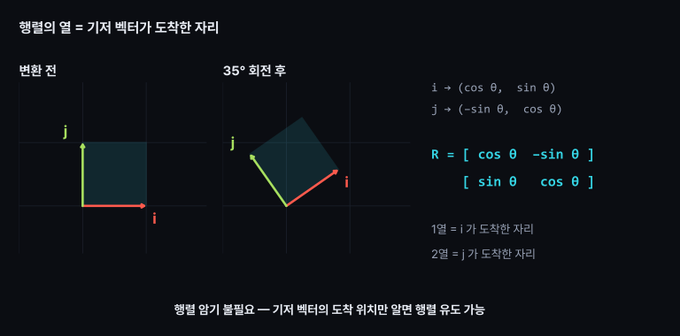
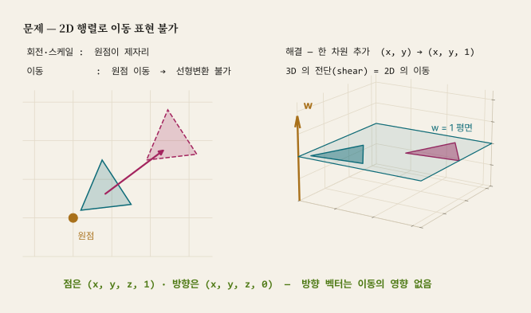
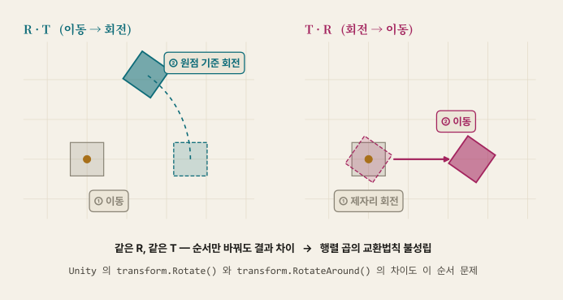
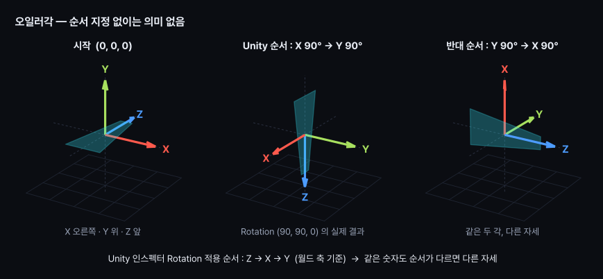
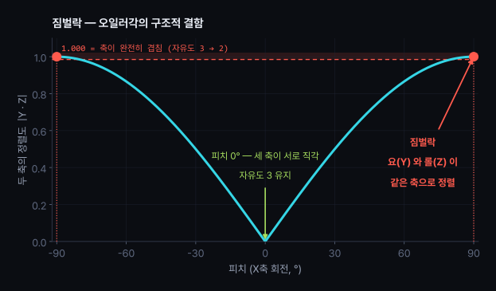
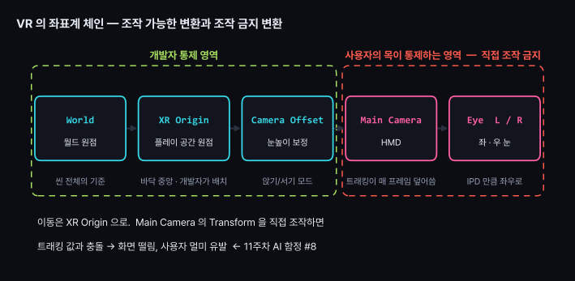
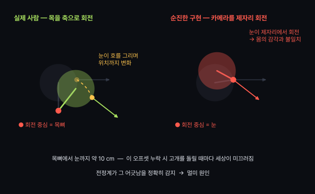

그래픽스 수학 기초
벡터 · 행렬 · 좌표계 변환의 이해와 Unity Transform 실습
결과 : 두 큐브가 서로 다른 방향
이유는?
A · 인스펙터에 직접 입력
Rotation 칸에 (90, 90, 0)
B · 코드로 두 번 회전
Rotate(90, 0, 0) 다음 Rotate(0, 90, 0)
이 수업 후 할 수 있는 것
1 계산
두 방향의 내적을 손으로 계산 → 대상이 내 앞·옆·뒤 중 어디인지 판정
2 예측
회전·이동의 순서를 바꿨을 때 물체가 어디로 가는지 그림으로 예측
3 판별
AI 회전 코드에서 짐벌락 원인 줄과 VR 멀미 원인 줄을 찾아 고치도록 요구
공식 암기는 목표가 아님 — 왜 그런 결과가 나오는지 말로 설명할 수 있으면 충분
벡터, 행렬,
그리고 변환
화면 속 모든 움직임 = 4×4 행렬 곱셈
이번 파트에서 쓰는 말 8개
- 벡터Vector
- 방향과 길이를 함께 가진 화살표 · 숫자 묶음 (x, y, z)
- 스칼라Scalar
- 방향 없는 숫자 하나 — 길이, 속력, 각도, 온도
- 정규화Normalize
- 방향은 그대로 두고 길이만 1로 맞추는 일
- 내적Dot product
- 두 화살표가 얼마나 같은 쪽을 보는지를 숫자 하나로
- 외적Cross product
- 두 화살표 모두에 수직인 새 화살표를 만드는 계산
- 법선Normal
- 면에 수직으로 선 화살표 = 면이 바라보는 방향
- 행렬Matrix
- 숫자를 표로 묶은 것 · 좌표를 넣으면 새 좌표가 나오는 변환 기계
- 동차좌표Homogeneous coord.
- 좌표 끝에 숫자 하나(w)를 더 붙여 이동까지 행렬로 처리하는 방식
점과 벡터의 차이
점 (Point)
위치 — 어디에 있는가
기준점(원점, 좌표 (0,0,0))을 옮기면 값이 바뀜
벡터 (Vector)
방향과 크기 — 어느 쪽으로 얼마나
어디서 출발하든 같은 화살표 → 원점을 옮겨도 값 그대로
점 = 주소 «부산대 정문» · 벡터 = 길 안내 «동쪽으로 3블록»
길 안내는 서울에서도 부산에서도 똑같이 통함 — 출발점과 무관
Unity는 둘 다 Vector3 한 타입 → 구분이 흐려짐 → 이동 변환에서 동작 차이 (동차좌표에서 다시)
벡터의 길이와 정규화
벡터 \( \mathbf{v} = (3, 4, 0) \) 의 길이(크기) — 피타고라스
각 성분을 길이 5 로 나누면 = 정규화
- 크기Magnitude
- 화살표의 길이 · 스칼라(숫자 하나)
- 단위 벡터Unit vector
- 길이가 정확히 1 인 벡터 · 순수한 방향
- 정규화.normalized
- 길이로 나눠 단위 벡터로 만드는 일
정규화 = 나침반 바늘 — «얼마나 멀리»는 지우고 «어느 쪽»만 남김
왜 필요한가 : 내적·조명 계산은 길이가 1 이라는 전제 → 정규화를 빠뜨리면 거리에 따라 결과가 커지거나 작아짐
Unity의 좌표계
| 축 | 방향 | Unity 이름 |
|---|---|---|
| X | 오른쪽 | Vector3.right |
| Y | 위 | Vector3.up |
| Z | 앞 (화면 안쪽) | Vector3.forward |
왼손 엄지 = X · 검지 = Y · 중지 = Z → Unity 축과 일치 = 왼손 좌표계
좌표계 = 지도의 범례 약속 «북쪽이 위» — 도구마다 약속이 달라 그대로 가져오면 그림이 누움
| 도구 | 위 | 좌표계 |
|---|---|---|
| Unity | Y | 왼손 |
| Unreal | Z | 왼손 |
| Blender | Z | 오른손 |
| Maya | Y | 오른손 |
| OpenGL | Y | 오른손 |
Blender(Z가 위) 모델을 Unity(Y가 위)로 가져오면 X축 −90° 누운 채 도착하는 원인
내적 — 두 방향이 같은 쪽을 보는 정도

내적 — 숫자로 직접 계산
계산법 : 같은 자리끼리 곱해서 모두 더하기
예 : \( \mathbf{a} = (1,0,0) \), \( \mathbf{b} = (0.6,\,0.8,\,0) \)
둘 다 길이 1 → \( \cos\theta = 0.6 \) → 사이 각 약 53° · 양수 → 앞쪽
내적 = 햇빛 아래 막대 그림자 길이
a 를 바닥선으로 두고 햇빛을 바로 위에서 비추면, 길이 1 막대 b 의 그림자 = 0.6
막대가 a 와 나란하면 그림자 1 · 직각으로 서면 0 · 뒤로 누우면 음수
- 투영Projection
- 한 화살표를 다른 화살표 위에 그림자처럼 눕힌 것
- cos θcosine
- 각도 θ 를 −1 ~ 1 숫자로 바꾼 값
그림으로 — 햇빛 아래 막대 그림자
내적·외적 직접 조작
청록 = 내 시선 a · 분홍 = 대상 방향 b · 노랑 = 외적 a × b (두 화살표 모두에 수직)
내적의 활용 — 시야각 판정
// 적이 내 시야각(60°) 안에 있는가?
Vector3 toEnemy = (enemy.position - transform.position).normalized;
float d = Vector3.Dot(transform.forward, toEnemy);
if (d > Mathf.Cos(60f * 0.5f * Mathf.Deg2Rad)) // = 0.866
Debug.Log("보인다");
시야 60° = 정면에서 좌우 30°씩 → \( \cos 30^\circ \approx 0.866 \) 보다 크면 시야 안
각도로 되돌릴 필요 없이 코사인 값끼리 비교 — Acos(코사인 → 각도) 계산은 느리고 불필요
.normalized 가 빠지면 멀리 있는 적일수록 d 가 커짐 → 시야 밖인데 «보인다» 출력
11주차 «사용자가 어디를 보고 있는가» 판정에 같은 코드 재사용
외적 — 두 벡터가 만드는 면

외적 — 방향을 손으로 찾기
예 : 오른쪽 \( (1,0,0) \) × 위 \( (0,1,0) \)
결과 = Unity 의 앞(Z) — 바닥 X·Y 두 축 모두에 수직
Vector3.Cross(Vector3.right, Vector3.up) // (0, 0, 1)순서를 바꾸면 \( \mathbf{b}\times\mathbf{a} = -(\mathbf{a}\times\mathbf{b}) \) → 반대 방향
외적 = 두 손가락이 만든 면에 수직으로 선 엄지
검지 = a, 중지 = b 쪽으로 펴면 엄지가 결과 방향 — Unity(왼손 좌표계)는 왼손, Blender 는 오른손
- 수직Perpendicular
- 서로 90° 를 이루는 관계
- 법선Normal
- 면에 수직인 화살표 = 면이 바라보는 쪽 · 조명 계산의 기준
왼손으로 확인 — Unity 축과 외적 방향
외적의 활용
면의 법선
삼각형 세 점 → 두 변의 외적 → 면이 바라보는 방향 → 조명 계산의 출발점(5주차)
회전축
"a 를 b 쪽으로 돌리려면 어느 축으로?" → a × b 가 그 축 · 쿼터니언이 회전을 만드는 방식
좌우 판정
대상이 내 왼쪽인지 오른쪽인지 → 외적의 위/아래 방향으로 구분
내적만으로는 좌우 구분 불가 — 왼쪽 30°와 오른쪽 30°의 내적 값 동일(0.866)
그림자 길이는 같고, 어느 쪽에 드리웠는지는 모름 → 방향까지 필요할 때 외적
변환의 세 가지 종류
| 변환 | 역할 | 원점 (0,0,0) | Unity 인스펙터 |
|---|---|---|---|
| Scale 스케일 | 크기 늘리고 줄이기 | 제자리 | localScale |
| Rotate 회전 | 방향 돌리기 | 제자리 | localRotation |
| Translate 이동 | 위치 옮기기 | 함께 이동 | localPosition |
변환(Transform) = 모든 점의 좌표를 정해진 규칙으로 새 좌표로 바꾸는 일
Transform 컴포넌트의 세 줄이 전부 → 나머지 모든 움직임은 이 셋의 조합
마지막 줄 : 스케일·회전은 원점을 그대로 두지만 이동은 원점까지 옮김 → 행렬 하나로 표현하기 어려운 이유 (변환 · 6)
행렬 — 좌표를 넣으면 새 좌표가 나오는 기계
계산법 : 행렬의 가로줄과 좌표를 같은 자리끼리 곱해서 더하기
결과 : 가로만 2배 늘어남 — 이 행렬 = «가로 2배 스케일» 기계
행렬 = 변환 기계 — 입구에 좌표 (3, 4) 를 넣으면 출구로 (6, 4) 가 나옴
기계 안 숫자만 바꾸면 회전 기계, 스케일 기계로 교체
- 선형변환Linear transform
- 직선은 직선으로, 원점은 원점에 남기는 변환 — 스케일·회전
- 기저 벡터Basis vector
- 좌표의 기준 화살표 · 2D 에서 \( \mathbf{i}=(1,0) \), \( \mathbf{j}=(0,1) \)
행렬의 구성 원리 — 열 = 기저 벡터의 도착지

회전행렬 유도
\( \mathbf{i} = (1,0) \) 을 θ 만큼 회전하면?
\( \mathbf{j} = (0,1) \) 을 θ 만큼 회전하면?
두 도착지를 세로 열로 세운 것 = 회전행렬
공식 암기 대신 «i, j 가 어디로 가나»만 그리면 언제든 다시 유도 가능
cos θ = 반지름 1 원 위 점의 가로 위치 · sin θ = 세로 위치 (θ 는 반시계 방향 각도)
손계산 — 90° 회전에 숫자 넣기
θ = 90° → \( \cos 90^\circ = 0 \), \( \sin 90^\circ = 1 \)
확인 1
오른쪽 (1, 0) → 위 (0, 1) : 시계 3시 방향 바늘이 12시로 — 반시계 90° 맞음
확인 2
(2, 1) → (−1, 2) : 길이 \( \sqrt{5} \) 그대로 → 회전은 크기를 바꾸지 않음
문제 — 선형변환으로 표현할 수 없는 이동

한 차원 추가로 이동 흡수
동차좌표 — 4×4 행렬을 쓰는 이유
마지막 성분 w = 1 → 4번째 열 \( (t_x, t_y, t_z) \) 이 결과에 더해짐
이동·회전·스케일을 모두 같은 4×4 곱셈으로 통일 → GPU 가 한 방식으로 처리
- 동차좌표Homogeneous
- (x, y, z) 끝에 w 를 붙인 (x, y, z, w)
- w 성분w component
- 이동을 받을지 말지 정하는 네 번째 숫자
4주차 원근투영 행렬도 같은 4×4 틀 — 이때는 w 가 1 이외의 값(깊이)이 되어 «멀수록 작게» 효과를 만듦
w = 1 은 점, w = 0 은 방향
예 : x 방향 5 이동 행렬 \( T(5,0,0) \) 에 같은 (1, 2, 3) 을 넣되 w 만 다르게
w = 꼬리표 — «이건 장소다(1)» 이면 이사할 때 함께 옮기고, «이건 방향이다(0)» 이면 그대로 둠
건물 전체를 동쪽으로 옮겨도 «북쪽을 보는 창문»은 여전히 북쪽 — 방향은 이동과 무관
m.MultiplyPoint(v); // w=1 취급 — 이동 포함 (위치, 정점)
m.MultiplyVector(v); // w=0 취급 — 이동 무시 (법선, forward, 빛의 방향)
같은 R, 같은 T, 다른 순서

손계산 — 순서만 바꾼 두 결과
점 \( p = (1, 0) \) · 회전 R = 90° · 이동 T = 오른쪽 3
R · T (이동 먼저 → 회전)
원점을 중심으로 큰 호를 그리며 위로
T · R (회전 먼저 → 이동)
제자리에서 돈 뒤 오른쪽으로
«제자리에서 왼쪽으로 돈 다음 앞으로 3걸음» vs «앞으로 3걸음 간 다음 돌기» — 같은 동작 두 개, 도착 위치가 다름
슬라이더 조작으로 확인
청록 = R·T (이동 먼저) · 분홍 = T·R (회전 먼저) · d = 0 이면 두 결과 일치
행렬 곱의 교환법칙 불성립
- 변환 합성Composition
- 여러 변환을 차례로 적용 = 행렬을 곱해서 하나로 합치기
- 비가환Non-commutative
- 곱하는 순서를 바꾸면 결과가 달라지는 성질 (3×4 = 4×3 과 달리)
읽는 방향 주의 : \( M = R \cdot T \) 를 점에 곱하면 오른쪽 T 가 먼저, 그 다음 R — 점에 가까운 쪽부터 적용
Unity Transform 의 적용 순서 : Scale → Rotate → Translate
행렬로 쓰면 \( M = T \cdot R \cdot S \) → 오른쪽 끝 S(스케일)가 가장 먼저 적용
코드에서의 차이
제자리 회전
transform.Rotate(Vector3.up, 55f);
// 위치 그대로, 방향만
// = T · R (회전 먼저)
원점 기준 회전
transform.RotateAround(Vector3.zero,
Vector3.up, 55f);
// 위치까지 변경 (호를 그림)
// = R · T (이동된 물체를 돌림)
AI에게 "물체를 회전시켜줘" 만 요청 → 둘 중 어느 쪽을 고를지 알 수 없음
회전 중심을 명시하는 것 = 프롬프트의 역할
짐벌락
"부드럽게 회전시켜줘" 요청 시 AI가 반복하는 실수
오일러각 — 인스펙터의 세 숫자
오일러각(Euler angles) = 회전을 세 축 각도를 차례로 돌린 결과로 적는 방식 · 직관적이고 읽기 쉬움
| Rotation 칸 | 이름 | 머리로 하면 | 예 |
|---|---|---|---|
| X | 피치 (Pitch) | 고개 끄덕 — 위·아래 보기 | 30 |
| Y | 요 (Yaw) | 고개 도리도리 — 좌·우 보기 | 45 |
| Z | 롤 (Roll) | 고개 갸웃 — 옆으로 기울이기 | 0 |
문제는 «차례» — 어떤 순서로 돌릴지 정하지 않으면 같은 숫자에서 다른 결과
Unity 인스펙터의 적용 순서 : Z → X → Y (부모·월드 축 기준)
회전 순서에 따른 결과 차이

도입 질문의 답
A · 인스펙터 (90, 90, 0)
Unity 규칙 : 월드 축 기준 Z → X → Y
X 90° : 정면이 아래로 → Y 90° : 아래는 그대로
결과 : 정면이 아래를 봄
B · Rotate 두 번
Rotate() 는 기본이 자기 축(로컬) 기준
X 90° 뒤 자기 위쪽 축으로 90° = 월드로 보면 Y 먼저, X 나중
결과 : 정면이 오른쪽을 봄
같은 숫자라도 ① 어떤 순서로 ② 어떤 축 기준으로 돌리느냐가 다름
→ 회전 행렬(쿼터니언)을 곱하는 순서가 다름 → 교환법칙 불성립이 원인
도입 질문의 답 — 두 큐브의 정면 추적
짐벌락 — 회전축 하나의 상실
세 개의 링이 겹친 장치 : 바깥부터 Y → X → Z (Unity 순서와 같음)
가운데 링(X, 피치)을 90° 로 세우는 순간
바깥 링(Y)과 안쪽 링(Z)이 같은 축으로 회전
손잡이는 세 개, 실제로 돌 수 있는 방향은 두 개 → 자유도 3 → 2
오일러각 표현 자체의 구조적 한계 — 어떤 순서를 골라도 반드시 생기는 지점 존재
카메라 짐벌(흔들림 방지 손잡이)에서 두 모터 축이 일직선으로 겹치면, 두 모터를 돌려도 같은 방향으로만 돌고 한 방향은 아예 못 돌림
한계 : 실제 짐벌은 기계가 걸리는 것, 오일러각은 숫자 표현의 문제 → 표현만 바꾸면(쿼터니언) 사라짐
- 짐벌락Gimbal lock
- 두 회전축이 겹쳐 한 방향 회전을 잃는 상태
- 자유도DoF
- 독립적으로 움직일 수 있는 방향의 개수
짐벌 링 세 개 — 정상 vs 축이 겹친 상태
피치 90° 조작
짐벌락 = 구조적 결함

쿼터니언 — 축 하나 + 각도 하나
회전축 \( \mathbf{n} \)(길이 1) 둘레로 θ 만큼 돌리는 회전을 네 숫자로
«축 하나 + 돌린 각도 하나»로 회전을 기억 — 문손잡이처럼 축에 꽂아 한 번에 돌림
«X 먼저, Y 다음» 같은 차례가 없어 짐벌락이 생기지 않음
| 오일러 | 쿼터니언 | |
|---|---|---|
| 짐벌락 | 있음 | 없음 |
| 보간 (중간 자세) | 덜컹거림 | 매끄러움 |
| 누적 오차 | 쌓임 | 정규화로 정리 |
| 사람이 읽기 | 쉬움 | 어려움 |
Unity : 내부 저장은 쿼터니언, 인스펙터 표시만 오일러각
쿼터니언 — 숫자 예와 곱하는 순서
예 : Y축 \( \mathbf{n}=(0,1,0) \) 둘레 90° → \( \sin 45^\circ = \cos 45^\circ \approx 0.707 \)
쿼터니언 곱도 순서를 바꾸면 결과가 다름 : \( q_1 q_2 \neq q_2 q_1 \)
Unity 의 a * b = b 를 먼저, 그 다음 a 적용 (행렬과 같은 오른쪽 우선)
Quaternion q = Quaternion.AngleAxis(90f, Vector3.up); // (0, 0.707, 0, 0.707)
transform.rotation = transform.rotation * q; // 자기 축(로컬) 기준으로 추가 회전
transform.rotation = q * transform.rotation; // 월드 축 기준으로 추가 회전
Unity 실무 규칙 네 줄
// 만들 때 — 사람이 읽는 각도로
transform.rotation = Quaternion.Euler(0, 45, 0);
// 겨냥할 때 — 방향 벡터에서 바로
transform.rotation = Quaternion.LookRotation(target - transform.position);
// 부드럽게 — 반드시 Slerp (구면 보간 : 두 자세 사이를 일정한 속도로)
transform.rotation = Quaternion.Slerp(a, b, t);
// 절대 하지 말 것
transform.eulerAngles += new Vector3(0, speed * Time.deltaTime, 0);
마지막 줄 = AI가 가장 자주 작성하는 코드
eulerAngles 는 읽을 때마다 쿼터니언에서 다시 계산 → 같은 자세가 다른 숫자로 바뀌어 나옴
(예 : (100, 0, 0) → (80, 180, 180)) → 누적하면 회전이 튀고 피치 90° 근처에서 짐벌락
로컬 vs 월드 — 기차 안에서 걷는 사람
기차(부모)가 동쪽으로 100 m 달리는 동안, 승객(자식)이 기차 안에서 앞으로 2 m 걸음
땅에서 본 승객의 이동 = 기차 이동 + 내 걸음 = 102 m
숫자 예 : 부모 위치 (10, 0, 0) · 자식 localPosition (0, 2, 0) · 회전·스케일 없음
→ 자식의 월드 position = (10, 2, 0)
- 부모-자식Parent-child
- Hierarchy 에서 끌어다 넣은 관계 · 부모가 움직이면 자식도 함께
- 로컬 좌표localPosition
- 부모를 기준(원점)으로 잰 위치 — 기차 안 좌석 번호
- 월드 좌표position
- 씬 전체의 원점 기준 위치 — 지도 위 GPS 위치
기차 안에서 걷는 사람 — 로컬 + 부모 = 월드
기차 = 부모(position 100 m 이동) · 기차 안 승객 자리 = localPosition · 땅에서 잰 승객 위치 = 자식의 position(월드)
부모-자식 = 행렬 곱의 연쇄
자식에서 시작해 부모 쪽으로 차례로 곱하며 올라감 → 오른쪽(가장 안쪽 자식)부터 적용
기차 비유로 : 승객 걸음 → 기차 이동 → (기차가 배에 실렸다면) 배 이동
localPosition
부모 기준 · 부모가 움직여도 값은 그대로, 화면 위치는 함께 이동
position
월드 기준 · 체인 전체를 곱한 결과
transform.TransformPoint(localPos); // 로컬 → 월드
transform.InverseTransformPoint(worldPos); // 월드 → 로컬
비균등 스케일 + 회전 = 찌그러짐
부모에 Scale (1, 3, 1)(세로만 3배 = 비균등 스케일) 적용 후 자식을 45° 회전 →
자식이 전단(shear) 되어 마름모처럼 기울어짐
스케일과 회전도 순서 교환 불가 · Unity 콘솔 경고 없음 → 결과만 이상해짐
고무판 위에 비스듬히 돌린 정사각형을 그린 뒤 고무판을 세로로 잡아 늘리면 → 정사각형이 아니라 마름모
해결
스케일이 필요하면 빈 부모 추가 → 부모에서 회전, 자식에서 스케일
또는 균등 스케일 (1, 1, 1 비율)만 사용
- 전단Shear
- 직사각형을 옆으로 밀어 평행사변형으로 만드는 변형
VR의 손 모델·UI 스케일 조정 시 자주 발생
고무판 늘리기 — 정사각형이 마름모가 되는 3단계
그리고 VR 에서는
변환 체인에 끼어드는 통제 불가 요소 — 사용자의 목
이번 파트에서 쓰는 말 8개
- HMDHead-Mounted Display
- 머리에 쓰는 디스플레이 — Quest 3 같은 VR 헤드셋
- 트래킹Tracking
- 센서로 머리·손의 위치와 회전을 매 순간 측정하는 일
- 좌표계 체인Coordinate chain
- 월드 → 리그 → 카메라 → 눈으로 이어지는 부모-자식 사슬
- XR Origin (리그)Rig
- 카메라와 손을 담은 부모 오브젝트 — 개발자가 옮기는 대상
- 전정계Vestibular system
- 귓속 균형 감각 기관 — 회전과 가속을 느낌
- IMUInertial Measurement Unit
- 회전(자이로) + 가속(가속도계) 센서 칩 — 기계의 전정계
- 사이버 멀미Cybersickness
- VR 에서 생기는 어지러움·메스꺼움
- IPDInterpupillary distance
- 두 눈동자 사이 거리 — 성인 평균 약 63 mm
일반 게임은 개발자(코드). VR은?
답 : 사용자의 머리 — VR의 좌표계 체인

리그 = 열차, 카메라 = 승객의 머리
놀이공원 열차(XR Origin)는 운영자(개발자)가 움직이고, 열차 안 승객의 머리(Main Camera)는 승객(사용자)이 돌림
운영자가 승객의 머리를 손으로 잡아 돌리면? → 승객 몸의 감각과 어긋남 = 멀미
개발자가 바꾸는 것
World · XR Origin · Camera Offset — 열차와 좌석 높이
사용자가 바꾸는 것
Main Camera · 좌우 눈 — 트래킹이 매 프레임 덮어씀
계층 · 2 의 행렬 연쇄 그대로 : \( M_{\text{눈}} = M_{\text{Origin}} \cdot M_{\text{Offset}} \cdot M_{\text{머리}} \cdot M_{\text{눈간격}} \)
원점 위치 선택 — 트래킹 모드
| 트래킹 모드 | 원점 | 용도 |
|---|---|---|
| Floor (Stage) | 바닥 중앙 | 서서 움직이는 콘텐츠 · 실제 키가 자동 반영 |
| Device (Eye Level) | 앱 시작 시 머리 위치 | 앉아서 하는 콘텐츠 · 리센터(현재 자세를 정면·원점으로 재설정) 필요 |
모드 선택 오류 → 키 180 cm 인 사람이 바닥에 파묻히거나 공중에 뜸
코드보다 설정 한 줄이 만드는 사고
원점 = 좌표계 체인의 출발점 — 출발점이 틀리면 뒤에 곱해지는 모든 위치가 함께 틀림 (12주차 컴포트 설계에서 다시)
전정계 — 몸에 달린 IMU

왼쪽 · 사람의 내이 : 서로 직각인 반고리관 3개 = 회전 · 이석기관 = 중력·직선 가속
오른쪽 · MEMS IMU 칩 : 자이로스코프 + 가속도계 — HMD 트래킹 부품
전정계 = 귓속 수평계 · 가속도계
반고리관 = 물이 든 도넛 튜브 — 머리를 돌리면 안의 액체가 늦게 따라오며 «돌고 있다» 신호
이석기관 = 젤리 위 작은 돌가루 — 버스가 출발하면 뒤로 쏠리며 «가속 중» 신호
한계 : 일정한 속도(등속)는 못 느낌 — 순항 중 비행기 안이 정지한 듯 느껴지는 이유
- 전정계Vestibular
- 내이(귀 안쪽)의 균형 감각 기관
- 반고리관Semicircular canals
- 회전을 감지하는 고리 3개 ↔ 자이로스코프
- 이석기관Otolith organs
- 중력·직선 가속을 감지 ↔ 가속도계
- IMUInertial Meas. Unit
- 자이로 + 가속도계를 묶은 칩 · HMD 의 회전 추적 담당
멀미의 원인
뇌 : 전정계가 느낀 움직임과 눈이 보는 움직임을 매 순간 대조
둘이 어긋나면 메스꺼움 = 감각 충돌 이론(가장 널리 쓰이는 설명)
«독소 중독으로 오해해 토하게 한다»는 진화적 해석도 있으나 아직 가설
배 선실에서 책 읽기 : 몸은 흔들림 · 눈은 정지 → 뱃멀미
VR 조이스틱 이동은 정반대 — 눈은 움직임 · 몸은 정지
| 전정계 | 눈 | |
|---|---|---|
| 실제로 걷기 | 움직임 | 움직임 |
| 영화 관람 | 정지 | 정지 |
| VR 조이스틱 이동 | 정지 | 움직임 |
마지막 줄이 문제 → VR 에서 텔레포트(순간이동)가 대표 이동 방식이 된 이유 — 이동 과정을 보여주지 않아 어긋남이 없음
회전 중심과 눈의 위치

고개 회전과 오늘 배운 변환
고개를 돌릴 때 눈의 움직임 = 회전 + 이동 — 눈은 목에서 떨어진 오프셋(고정된 간격) 위치
오른쪽부터 : 오프셋 o 를 고개 회전으로 돌리고 → 목 위치로 옮김 = 순서 · 2 의 T · R (회전 먼저)
숫자 예 : 눈이 목 앞 \( o = (0,\,0,\,0.1) \) m, 오른쪽으로 90° → \( (0.1,\,0,\,0) \) — 눈이 약 14 cm 이동
오프셋(약 10 cm) 누락 시 고개를 돌릴 때마다 세상이 미끄러짐 → 전정계가 그 어긋남을 감지
Quest 3 는 머리 위치까지 추적(6DoF) → 실제 움직임이 그대로 반영 — 카메라를 직접 건드리지 않는 한
설계 원칙
VR에서 움직이는 대상은 언제나 리그(Rig)
카메라 직접 이동 금지
멀미를 유발하는 코드
Camera.main.transform.position += v;올바른 코드
xrOrigin.transform.position += v;열차 비유 : 승객 머리 대신 열차를 움직임 · 11주차 AI 함정 #8 — AI 가 대부분 왼쪽 코드를 작성
다음 주 예고
눈이 두 개 → 변환 체인의 끝이 두 갈래로 분기
IPD(동공 간 거리) : 성인 평균 약 63 mm, 대략 54~74 mm — 사람마다 다름
같은 씬을 눈마다 두 번 그림 → 단순 계산으로 비용 두 배 → 프레임 예산이 빠듯해짐
(싱글패스 렌더링 등으로 비용을 줄이는 방법 — 4주차 렌더링 파이프라인 · HMD 광학)
프롬프트 실습
개념 이해 → 정확한 요구 → 오류 판별
실습의 3단 루프
1 개념
무엇을 만들어야 하는지 이론으로 이해
2 명세
정확한 용어로 AI에게 요구
용어를 모르면 요구 불가
3 검증
결과가 이론적으로 맞는지 확인
틀렸다면 어디가 틀렸는지
실습의 핵심 : ②와 ③
코드 작성은 AI, 요구와 판별은 학생
AI 함정 #1 직접 재현
이렇게 요청하면
"큐브가 부드럽게 회전하게스크립트를 만들어줘"
new Vector3(0, spd * dt, 0);
문제점
· eulerAngles 누적· 매 프레임 쿼터니언 → 오일러 변환
· 값이 튀고 특정 각도에서 잠김
· 회전 중심 미지정
→ 학생이 지적해야 할 항목
명세 작성 예시
[목표]
큐브를 월드 Y축 기준으로 초당 45° 등속 회전시킨다.
[제약]
- 회전 누적에 eulerAngles 를 쓰지 말 것 (짐벌락·값 튐)
- Quaternion 을 유지한 채 누적할 것
- 프레임률과 무관하게 같은 속도 (Time.deltaTime)
- 회전 중심은 물체 자신의 원점
[검증 조건]
- 60fps 와 30fps 에서 10초 뒤 각도가 같을 것
- 어떤 각도에서도 축이 잠기지 않을 것
[비목표]
- 입력 처리, UI 는 만들지 말 것
네 칸 = 수업의 표준 명세 양식
[제약]과 [검증 조건]에 개념 이해도가 드러남
오늘의 실습 — 50분
| # | 실습 | 확인할 개념 |
|---|---|---|
| 1 | 위 명세로 회전 스크립트 생성, AI의 첫 응답을 그대로 기록 | 프롬프트 → 결과 대응 |
| 2 | 일부러 eulerAngles 버전을 만들어 짐벌락 재현, 영상 캡처 |
짐벌락 진단 |
| 3 | 부모-자식 3단 체인 구성, 부모에 Scale(1,3,1) 적용 후 자식의 찌그러짐 관찰 |
계층 변환 · 전단 |
| 4 | Main Camera 직접 이동 코드와 부모 리그 이동 코드를 모두 작성해 비교 | 11주차 예비 |
1~3 필수(Core), 4 확장(Stretch) · 제출물 없음, 수업 안에서 완료
이번 주 과제 — Meta 개발자 계정
Meta 개발자 계정 만들기
Quest 3 개발에 필요한 개발자 인증 — 승인까지 시간 소요
11주차 실습 전 필수
제출 : 개발자 대시보드 캡처 · PLATO
미루면 11주차 실습 불가
결제 수단 등록·본인 확인 포함 → 승인까지 며칠 소요 가능, 가급적 오늘 안에 신청
한 장 요약
| 개념 | 핵심 | 비유 |
|---|---|---|
| 점 · 벡터 | 위치 vs 방향과 크기 | 주소 vs 길 안내 |
| 내적 | 같은 쪽을 보는 정도 · 각도 비교는 코사인끼리 | 막대 그림자 길이 |
| 외적 | 두 벡터에 수직 = 면의 법선 · 좌우 판정 | 두 손가락 면에 선 엄지 |
| 행렬 | 열 = 기저 벡터가 도착한 자리 · 암기 대신 유도 | 변환 기계 |
| 동차좌표 | w=1 은 점(이동 적용), w=0 은 방향(이동 무시) | 장소/방향 꼬리표 |
| 순서 | R·T ≠ T·R · 회전 중심은 명세에 직접 | 돌고 걷기 vs 걷고 돌기 |
| 짐벌락 | 오일러각의 구조적 결함 · 축이 겹쳐 자유도 상실 | 카메라 짐벌 축 겹침 |
| 쿼터니언 | 축 + 각도 · 짐벌락 없음, 곱하는 순서는 여전히 중요 | 축에 꽂아 한 번에 돌리기 |
| VR 체인 | 카메라 대신 리그를 이동 · 머리는 사용자의 영역 | 열차와 승객 |
Unity 기초와
첫 바이브코딩
씬 그래프 · 컴포넌트 구조 · 게임 루프
AI 함정 #2 — 프레임률에 따라 달라지는 속도